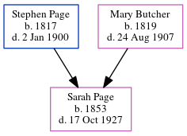

William Marsh 1822 -
[ Home ] | [ Calendar ] | [ Surnames Index ] | [ Errors ] | [ Family History ]William Marsh, the husband of Mary Ann Cowell (the three times great-aunt of Nigel Horne), was born in Ash, Kent, England in 18221 and married Mary (with whom he had 5 children: William, Mary Ann Harriet, Hannah, Caroline and Rosa J) in Eastry, Kent, England around Aug 18472. On 7 Apr 1861, he was living at Upper Weddington in Ash1.
Children
- William was born in 1850
- Mary Ann Harriet was born on 26 Apr 1852
- Hannah was born in 1856
- Caroline was born in 1858
- Rosa J was born in 1861
Citations
- 1861 England, Wales & Scotland Census - Findmypast (was age 39 and the head of the household)
- Kent Marriages And Banns - Findmypast
Family Tree
Map
Generated by ged2site. Last updated on Jul 3, 2024